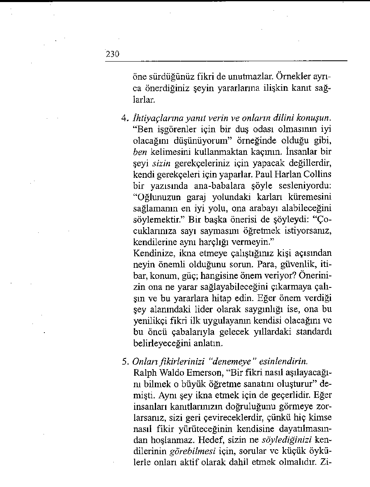
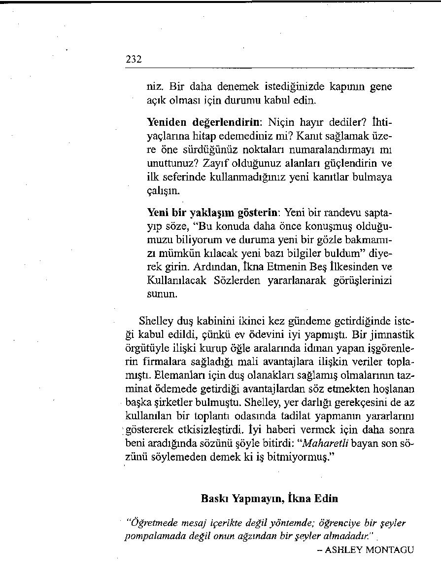

SÖZLER
GEREKEN SÖZLER
Kendinize korku ve endişe tel Kendinize kararlılık ve öngörü
kin edersiniz.
telkin edersiniz.
"Herkes g ö z le r in i n e k a d a r ş i ş
"Bir an ö n ce a rk a d a şla rım ı y e m a n la d ığ ım a d ik in ce k im b ilir
niden g ö rm e y e can a tıyo ru m .”
n a sıl u ta n a ca ğ ım ? ”
Endişe ve kaygılarınız üzerin Zihninizde akşamın nasıl geçde yoğunlaşarak daha da sinirmesini istediğinizin provasını lenirsiniz.
yaparsınız.
"Başka herkes k im b ilir n e k a
"Joyce v e K e lly ’nin n e y a p tık d a r h oş g ö rü n ecek ? B an a d a
la r ın ı ö ğ re n e c e ğ im için ç o k
b a ş ım ı ö n e e ğ ip k a lm a k ta n
m utlu o la ca ğ ım . K esin lik le h er
b a şk a y a p a c a k b ir ş e y k a lm a d a n sa k a lk a ca ğ ım .”
y a c a k .”
Her şeyin kötü gideceğini dü Partinin yapılacağı yeri gözü şünürsünüz. Aklınız hep bu konüzde canlandırır, kendinizi
nuya takılıdır. Sonunda gitmebaşınız dik salona girerken hameye karar verirsiniz.
yal edersiniz.
“B o ş ver. B una katla n m a k z o
"Dik d u ra ca ğ ım v e o k u l a rk a runda d eğ ilim . K en d im i a ş a ğ ıd a şla rım la y e n id e n k a rş ıla ş a la n m ış h is s e d e c e k v e h iç b ir
c a ğ ım bu h a rik a f ır s a tta n
şe y d e n ta t alam ayacağım ."
mümkün old u ğ u k a d a r y a r a r la n a c a ğ ım .”
Yirmi Beşinci Bölüm
İkna Etmenin Beş İlkesi
isteklerinizi savunmaya hazır mısınız? Sadece geçerli bir nedeniniz olması yeterli değildir. Önce kendi adınıza konuşabilecek cesareti toplamanız ve sonra fikirlerinizi, karşınızdakini evet demeye yöneltecek bir zamanlama, duyarlılık ve maharetle sunmanız gerekir.
Amerikalı denemeci Joseph Wood Krutch, “Kediler size ne
istediğinizi sormanın bir zararı olmadığı ilkesini izliyor gibidirler” diyor. Eğer kedilerin işine yarıyorsa, belki size de yararı olur.
Atletik dostlarımdan biri olan Shelley, Washington’da bir
hukuk bürosunda çalışır. Öğle aralarında Smithsonian’a çıkan
yan yollarda koşuya çıkıyor. Açık havaya çıkmaktan çok hoşlanıyor, ama sonra duş almadan iş giysilerini giymek zorunda olması kendisini rahatsız ediyor. Bürodakilere, tıpkı erkekler için olduğu gibi kadın çalışanlar için de küçük bir duş kabini
228
yapılmasını önermiş, ama yer darlığı, masraflar vb. gerekçelerle bu isteği geri çevrilmiş. Shelley beni arayıp kendisine yardımcı olmamı rica etti.
İlk yaptığım, hülyasından vazgeçmediği için kendisini tebrik etmek oldu. Eğer önerisini aşağıdaki İkna Etmenin Beş İlkesini kullanarak sunarsa, kendi kaderini etkileyebileceğini ve düşünü gerçekleştirebileceğini söyledim.
Talih mi, Kader mi?
‘‘Talihimizi kendimiz yapar sonra buna kader deriz.”
- BENJAMIN DISRAELI
1. Duruma olumlu beklentilerle yaklaşırı.
Bu önerinin aşikâr bir şey olduğunu düşünebilirsiniz. Gruplardan birinde bir katılımcı, “Bu sağduyu gereğidir, bunu biliyoruz” demişti. Ben de cevap olarak babamın bir sözünü aktardım: “Bir şeyin
sağduyu gereği olması, onun herkes tarafından uygulandığı anlamına gelmez.”
Birisine bir talep ilettiğinizde içinizden, “Boşuna
zaman harcıyorum, bunu hiçbir zaman kabul etmezler” dediğiniz hiç olmadı mı? Eğer siz kendiniz önerinizin şansı olmadığını düşünüyorsanız, onlar nasıl tersini düşünsünler? Dwight D. Eisenhower
bir keresinde şöyle demişti: “Karamsarlık daha
hiçbir savaşta galip gelmemiştir.” Kendinize iyimserlik telkin ederseniz (“Bunun değerli bir öneri olduğuna eminim”), inancınız sizi cesaretli kılacaktır.
2. İtirazlarını önceden tahmin edip seslendirin.
Niçin hayır diyebileceklerini tahmin etmeye çalı şın. Hangi gerekçeyle sizi geri çevirebileceklerini
229
bulmaya çalışın. Olası itirazlarını belirleyin. Eğer
öne süreceğiniz fikirler itirazlarını karşılamıyorsa
size kulak bile vermeyecek, önerinizin niçin işe yaramayacağını size anlatabilmeleri için söz sırasının kendilerine gelmesini bekleyeceklerdir. Eğer “Büt çemizde bunun için bir fon yok” diyeceklerini tahmin ediyorsanız, o zaman ağzınızdan çıkacak ilk söz şöyle olabilir: “Mevcut fonlarımızın yetersiz olduğunu düşünüyor olabilirsiniz ve bana on dakika dikkat ayırırsanız, ben size operasyonun ilk üç haftasında bu miktarda bir parayı nasıl tasarruf edebileceğimizi anlatabilirim.”
3. Bütün noktaları tek tek numaralandırın ve belgeleyin.
Lisedeki münazara hocamız şöyle derdi: “Ustalığınızı belirleyecek olan düşüncelerinizin nasıl düzenlendiğidir.” Temsil ettiğiniz konuda dünyanın en önde gelen otoritesi olabilirsiniz, ama eğer kanıtlarınız düzenli değilse, dinleyicileriniz ne konuştuğunuzu bilmediğiniz sonucuna varacaktır.
Öne süreceğiniz noktalara meşruiyet kazandırmanın en kolay ve çabuk yolu onları numaralandırmaktır. “Üç nedenden bu artış çok yararlı olacaktır.
Birincisi,... ve İkincisi,...” Kanıtların numaralandı-
nlması materyalin görüşten çok bir olgu gibi algılanmasını sağlar ve ağırlığını artırır. Ayrıca yapının belirginliği nedeniyle dinleyenler söylenenleri çok daha kolay anlar ve hatırlar.
Ulusal Konuşmacılar Birliğinin bir üyesi ve on beş
yıllık bir konuşmacı olarak, bir mesajı aktarmanın
en etkili yolunun bir fikir öne sürmek sonra bir örnek vermek, sonra bir fikir daha öne sürüp bir örnek daha vermek olduğunu öğrendim. Örnekler iki türlü işe yarar. Dinleyiciler örneği hatırlar, böylece 
230
öne sürdüğünüz fikri de unutmazlar. Örnekler ayrıca önerdiğiniz şeyin yararlarına ilişkin kanıt sağlarlar.
4, İhtiyaçlarına yanıt verin ve onların dilini konuşun.
“Ben işgörenler için bir duş odası olmasının iyi
olacağını düşünüyorum” örneğinde olduğu gibi,
ben kelimesini kullanmaktan kaçının. İnsanlar bir
şeyi sizin gerekçeleriniz için yapacak değillerdir,
kendi gerekçeleri için yaparlar. Paul Harlan Collins
bir yazısında ana-babalara şöyle sesleniyordu:
“Oğlunuzun garaj yolundaki karları küremesini
sağlamanın en iyi yolu, ona arabayı alabileceğini
söylemektir.” Bir başka önerisi de şöyleydi: “Çocuklarınıza sayı saymasını öğretmek istiyorsanız, kendilerine aynı harçlığı vermeyin.”
Kendinize, ikna etmeye çalıştığınız kişi açısından
neyin önemli olduğunu sorun. Para, güvenlik, itibar, konum, güç; hangisine önem veriyor? Önerinizin ona ne yarar sağlayabileceğini çıkarmaya çalı şın ve bu yararlara hitap edin. Eğer önem verdiği
şey alanındaki lider olarak saygınlığı ise, ona bu
yenilikçi fikri ilk uygulayanın kendisi olacağını ve
bu öncü çabalarıyla gelecek yıllardaki standardı
belirleyeceğini anlatın.
5. Onları fikirlerinizi “denemeye” esinlendirin.
Ralph Waldo Emerson, “Bir fikri nasıl aşılayacağını bilmek o büyük öğretme sanatını oluşturur” demişti. Aynı şey ikna etmek için de geçerlidir. Eğer insanları kanıtlarınızın doğruluğunu görmeye zorlarsanız, sizi geri çevireceklerdir, çünkü hiç kimse nasıl fikir yürüteceğinin kendisine dayatılmasından hoşlanmaz. Hedef, sizin ne söylediğinizi kendilerinin görebilmesi için, sorular ve küçük öykülerle onları aktif olarak dahil etmek olmalıdır. Zi-
231
hinlerinde önerilen şeyin resmini çıkardıklarında,
pasif direnme durumundan çıkıp fikrinizi gözlerinde canlandırmaya ve benimsemeye başlayacaklardır.
Redleri Tersine Döndürün
“Kazanmakta olduğunuz bir oyunu hiç bir zaman değiştirmeyin,
kaybetmekte olduğunuzu değiştirin.”
- VİNCE LOMBARDI
Arkadaşım Shelley şunu söyledi: “İlk önerimi bu beş ilkeyi
kullanarak getirmiş olsaydım, muhtemelen kazanırdım. Şimdi
sanıyorum iş işten geçti, kaybettim. Talebimi bir kere reddetmiş oldukları için ikinci bir şansım yok.”
İyi bir noktaya temas etmişti. İnsanlar bir kere hayır dedi ğinde, olay genellikle kapanır. Ne var ki, eğer üzerindeki toprağı kazıp yeni bir kanıt öne sürerseniz, ölü bir konuyu yeniden gündeme getirebilirsiniz. İlk müzakerede tartışılmamış
olan yeni bir bakış açısını dikkatlerine sunun. Böylece, fikirlerini değiştirmek ve farklı bir karara varabilmek için bir gerekçe bulabilirler. Kendilerine kararlarını dayandıracakları yeni ölçütler sunmuş olduğunuz için, onurları zedelenmeden eski kararlarından dönebilirler. Ünlü futbol koçu Vince Lombar-di’nin dediği gibi, eğer ilk taktikleriniz başarılı olmamışsa, yenilerini denemenin zamanı gelmiş demektir.
Shelley’e, aşağıdaki yöntemleri kullanarak teklifini bir kere daha gündeme getirmesini önerdim. Geri çevrilmiş bir iste ğinizin tekrar dikkate alınmasını istediğinizde şu yolu izleyebilirsiniz.
Geri çekilin: Olaydan nazikçe çıkın. Çıkarken kapıyı çarpmayın, ileride belki gene çalmak isteyebilirsi 
232
niz. Bir daha denemek istediğinizde kapının gene
açık olması için durumu kabul edin.
Yeniden değerlendirin: Niçin hayır dediler? ihtiyaçlarına hitap edemediniz mi? Kanıt sağlamak üzere öne sürdüğünüz noktaları numaralandırmayı mı unuttunuz? Zayıf olduğunuz alanları güçlendirin ve ilk seferinde kullanmadığınız yeni kanıtlar bulmaya
çalışın.
Yeni bir yaklaşım gösterin: Yeni bir randevu saptayıp söze, “Bu konuda daha önce konuşmuş olduğumuzu biliyorum ve duruma yeni bir gözle bakmamızı mümkün kılacak yeni bazı bilgiler buldum” diyerek girin. Ardından, ikna Etmenin Beş ilkesinden ve Kullanılacak Sözlerden yararlanarak görüşlerinizi sunun.
Shelley duş kabinini ikinci kez gündeme getirdiğinde iste ği kabul edildi, çünkü ev ödevini iyi yapmıştı. Bir jimnastik
örgütüyle ilişki kurup öğle aralarında idman yapan işgörenlerin firmalara sağladığı mali avantajlara ilişkin veriler toplamıştı. Elemanları için duş olanakları sağlamış olmalarının tazminat ödemede getirdiği avantajlardan söz etmekten hoşlanan başka şirketler bulmuştu. Shelley, yer darlığı gerekçesini de az kullanılan bir toplantı odasında tadilat yapmanın yararlarını
göstererek etkisizleştirdi, iyi haberi vermek için daha sonra
beni aradığında sözünü şöyle bitirdi: “Maharetli bayan son sözünü söylemeden demek ki iş bitmiyormuş.”
Baskı Yapmayın, fkna Edin
‘‘Öğretmede mesaj içerikte değil yöntemde; öğrenciye bir şeyler
pompalamada değil onun ağzından bir şeyler almadadır."
- ASHLEY MONTAGU
233
Oturumlarımızdan birinde bir katılımcı, “Beşinci İlke dışında
hepsini anlıyorum. Birisinin sizin fikirlerinizi ‘denemesini’
tam nasıl sağlayabilirsiniz?” dedi.
İyi bir noktaya değinmişti. İnsanların fikirlerinizi yeniden
gözden geçirip benimsemesini nasıl sağlayabilirsiniz? Bunun
için, insanların kendilerine zorla dayatılanlara oranla kendi
öğrendikleri şeyleri daha kolay hatırladığını bilgece anlamış
olan Sokrates’e kulak verelim.
Sokrates’in, ifadeleri yanıtı içinde sorulara dönüştürme
yöntemi başarılı bir ikna çalışması için esastır. Bu, birisini bir
fikri kabul etmeye zorlamakla, fikirleri ona kendine bir fikir
oluşturmasına olanak verecek şekilde kışkırtıcı tarzda sunmak
arasındaki farktır. İnsanları aktif bir şekilde dahil edip onları
direksiyon başına oturtarak dirençlerini kırabilirsiniz. Örne ğin, “Kadın elemanlarımızın işten sonra üstlerini değiştirecekleri bir yeri hak ettiklerini düşünüyorum” demek yerine, “Kadın işgörenlerimiz için bir duş kabini ayırdığımızda hastalık nedeniyle işe gelmemeyi ve işçi tazminat harcamalarını nasıl azaltabileceğimizi görmek ister misiniz?” diye sorun.
Öykü Anlatın
“Fıkralar bazen hakikatin en etkili araçlarıdır ve çarpıcı ve yerinde olduklarında çoğu zaman kanıtlardan çok daha güçlüdürler.”
- TYRONE EDWARDS
Duyarlı ayrıntılara sahip sorular ve başarı öyküleri, dinleyicilerin mantıksal sol beyinlerinden duygusal sağ beyinlerine ge çiş yapmalarını sağlar. İyi anlatılmış ilginç bir öykü en sert
eleştirmenlerin bile hoşuna gider. Eğer anlattığınız fıkranın
sonucuna ilgi duyarlarsa, fikrinizi de paylaşırlar. Canlı sözcüklerle çizilen resimler lafları kişisel gerçekliğe dönüştürme gücüne sahiptir.
234
Bir arkadaşım emlakçilik kursunu başarıyla bitirip emlak-
çılığa başlamıştı. Uzun süre tek bir ev bile satamamıştı. Sonra
bir gün şefinin odasına girip masasının önündeki koltuğa çökmüş ve “işten ayrılıyorum!” demiş.
Şefi, “Nasıl olur?” demiş, “Bu işe gireli daha birkaç ay oldu.” Umutsuzca açıklamış: “Arabamla dört bin mil yol kat ettim, düzinelerce müşteriye ev gösterdim ama karşılığında ortaya koyabileceğim hiçbir şey yok. Sonunda, ‘Atı suya götürebilirsiniz ama ona zorla su içiremezsiniz’ deyişinin doğru olduğu sonucuna vardım.”
Tecrübeli şefi yanıtlamış: “Maria, sen onlara su içirtmek
zorunda değilsin. Senin yapman gereken onları susatmak.”
Bir gün öğle yemeğinde Maria’yla ikna Etmenin Beş ilkesini ve Redleri Geri Döndürmedeki üç tekniki (geri çekilme, yeniden değerlendirme, yeni bir yaklaşım gösterme) emlakçilik mesleğinde nasıl kullanabileceğini konuştuk. Şimdi, pazarlama çalışmalarının önemli bir bölümünü öykü ve sorular oluşturuyor. Artık, “Ben bu semti çok seviyorum” demek yerine, “Ne kadar sevimli bir mahalle değil mi?” diyor. “Bu bence çok şirin bir oda” demek yerine, “Burası kimin odası olacak, Tina’mn mı, yoksa Dolores’in mi?” diye soruyor. Evin eski sakinlerinden evle ilgili ilginç öykü ve anılar öğrenip bunları müşterilerine göre kişiselleştiriyor. Müşterilerini su içmeye zorlamak yerine susattığı için, eskisine oranla çok daha ba şarılı olmaya başladığını söyleyebilirim.
İKNA ETMENİN BEŞ İLKESİ İÇİN EYLEM PLANI
Çocuklarınızın tatil sonu havuz partisi yapılıyor. Küçükler azgınca
oradan oraya koşuşturuyorlar. Kendilerine defalarca hızlı koşmamalarını söylediniz, ama maskaralıklarım sürdürüyorlar. Onları sakinleşmeye nasıl ikna edersiniz?
UNUTMANIZ GEREKEN